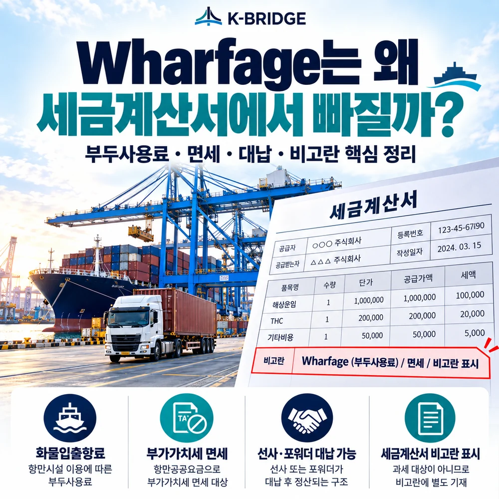
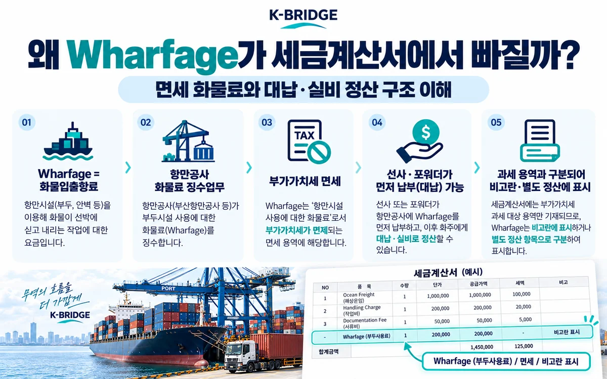
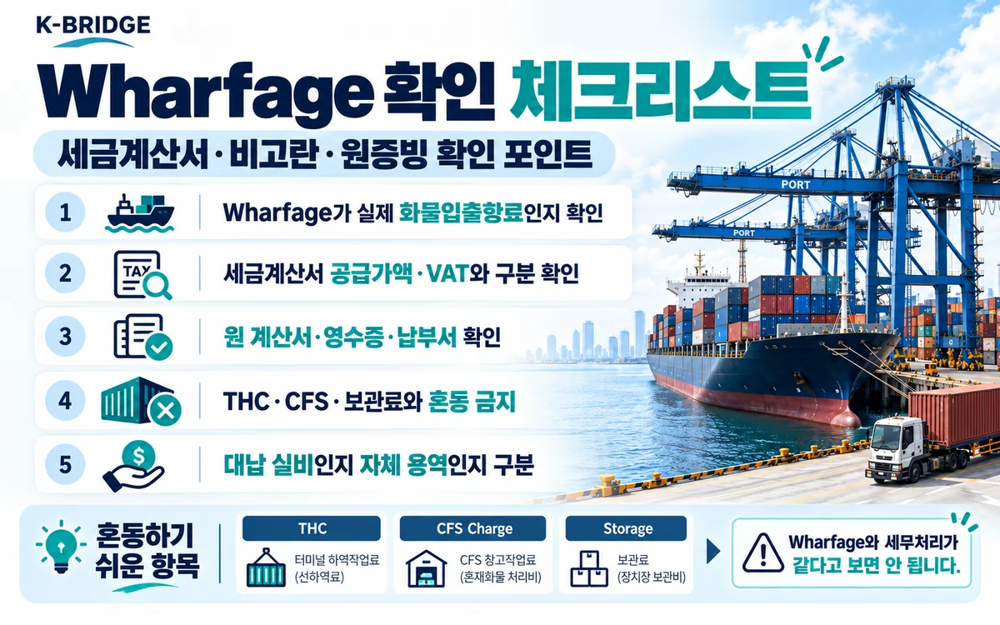

먼저 결론부터
국내 물류 청구서에서 Wharfage로 표시되는 화물입출항료는 항만공사의 화물료 징수업무에 해당하는 경우 부가가치세 면세입니다. 포워더가 이 금액을 고객 대신 납부한 실비로 정산한다면 자신의 과세 용역 공급가액과 분리해 세금계산서 본문에는 넣지 않고 비고란이나 별도 정산서에 표시하는 실무가 흔합니다.
다만 “Wharfage는 무조건 비고란에 표시해야 한다”는 법정 서식 규정은 아닙니다. 실제 공급 주체, 대납 여부, 원증빙에 따라 증빙 형태가 달라질 수 있습니다.
1. Wharfage란 무엇인가?
관세청은 Wharfage를 반출입 화물을 취급하거나 부두·장치장을 사용하는 대가로 부두 소유자가 징수하는 수수료로 설명합니다.
국내 수출입 실무에서 포워더·선사 청구서의 Wharfage는 ‘화물입출항료’ 의미로 쓰이는 경우가 많습니다. 항만시설을 이용하는 화물에 부과되는 공적 성격의 화물료이며, 컨테이너 화물은 보통 TEU 단위, 일반화물은 중량 또는 용적 기준 등으로 산정됩니다.
용어 주의: 현장에서는 “부두사용료”라는 말을 넓게 사용하는 경우가 있습니다. 따라서 청구서의 Wharfage가 법정 화물입출항료인지, 터미널의 다른 작업료인지 항목명을 확인해야 합니다.
2. 왜 Wharfage에는 부가가치세가 붙지 않을까요?
2026년 10월 현재 울산항만공사는 화물입출항료에 대해 「조세특례제한법 시행령」 제106조와 같은 법 시행규칙 제48조에 따라 면세라고 명시하고 있습니다.
시행규칙 별표 10의 정부업무대행단체 면세사업에는 「항만공사법」에 따라 설립된 항만공사의 ‘화물료 징수업무’가 포함됩니다. 즉 항만공사가 징수하는 해당 화물료는 일반적인 과세 서비스처럼 공급가액에 VAT 10%를 더하는 구조가 아닙니다.
또한 국세청 안내는 과세거래는 세금계산서, 면세거래는 계산서로 구분해 설명합니다. 따라서 면세 화물료를 포워더의 과세 용역과 같은 세금계산서 공급가액에 섞어 VAT를 계산하면 거래 성격이 달라질 수 있습니다.

3. 그래서 왜 세금계산서에서 빠지고 비고란에 표시될까요?
포워더의 과세 용역과 면세·대납 비용을 한눈에 구분하기 위해서입니다.
예를 들어 포워더가 서류업무·국내운송·취급서비스 등 자신의 과세 용역을 제공하면서 Wharfage를 먼저 납부했다고 가정하겠습니다. 포워더 자신의 서비스는 세금계산서 공급가액과 VAT에 반영하지만, Wharfage를 고객을 대신해 납부한 실비로 정산한다면 과세 공급가액과 구분해야 합니다.
이때 회사들은 고객이 실제 지급해야 할 총액을 맞추기 위해 Wharfage를 세금계산서 비고란, 거래명세서 또는 별도 대납금 내역에 적는 방식을 많이 사용합니다.
중요한 구분
“면세라서 세금계산서에서 제외”와 “포워더의 대납금이라 공급가액에서 제외”는 비슷해 보이지만 같은 개념은 아닙니다. 첫 번째는 원 거래의 부가가치세 성격이고, 두 번째는 포워더가 누구의 비용을 어떤 관계로 정산하는지에 관한 문제입니다.
비고란 표시 자체가 법으로 강제된 것은 아닙니다. 거래명세서·정산서 등 다른 문서로 구분할 수도 있습니다. 핵심은 과세 공급가액, 면세거래, 대납실비의 성격과 원증빙이 서로 일치하는 것입니다.
4. 청구서 예시로 보면 더 쉽습니다
| 구분 | 금액 예시 | VAT | 표시 방식 예시 |
|---|---|---|---|
| 포워딩·서류 등 과세 용역 | 100,000원 | 10,000원 | 세금계산서 공급가액 |
| Wharfage / 화물입출항료 | 4,429원 | 면세 | 비고 또는 별도 정산 |
| 고객 총 지급액 | 114,429원 | - | 과세금액 + VAT + 별도 실비 |
위 4,429원은 부산항 외항 컨테이너 1TEU 화물입출항료의 현재 공시 요율을 활용한 이해용 예시입니다. 실제 청구액은 항만, 컨테이너 크기, 감면 여부, 화물종류 등에 따라 달라질 수 있습니다.
5. Wharfage가 면세라고 터미널 비용이 전부 면세인 것은 아닙니다
| 항목 | 일반적인 의미 | Wharfage와 동일하게 보면 될까? |
|---|---|---|
| Wharfage / 화물입출항료 | 항만시설 이용 화물료 | 항만공사 화물료 면세사업 여부 확인 |
| THC | 터미널 하역·처리 관련 비용 | 아니오. 공급 주체와 용역 성격 별도 확인 |
| CFS Charge | LCL 창고·작업 관련 비용 | 아니오 |
| Storage | 보관기간 초과 또는 창고 보관료 | 아니오 |
| Demurrage / Detention | 컨테이너·터미널 사용기간 초과 비용 | 아니오 |
“항만에서 발생한 비용 = 모두 면세”라고 판단하면 안 됩니다. 청구 항목의 실제 용역 내용과 공급자를 기준으로 세무 처리가 달라질 수 있습니다.
6. 2026년 항만별 화물입출항료는 서로 다릅니다
현재 공개 요율을 보면 같은 외항 컨테이너 화물이라도 항만별 요율이 다릅니다.
| 항만 | 외항 컨테이너 | 40ft 적용 예시 | 출처 |
|---|---|---|---|
| 부산항 | 4,429원 / 1TEU | 2배 적용 | 부산항만공사 |
| 울산항 | 2,742원 / 1TEU | 2배 적용 | 울산항만공사 |
항만시설사용료의 기본 체계는 2026년 8월 21일 시행된 「무역항 등의 항만시설 사용 및 사용료에 관한 규정」을 기준으로 운영되며, 실제 항만공사별 요율·감면은 해당 항만의 최신 공지를 확인해야 합니다.

7. 세금계산서와 Wharfage를 확인할 때 체크할 것
- 청구 항목의 정확한 명칭을 확인하세요. Wharfage가 실제 화물입출항료인지부터 확인합니다.
- 과세 공급가액과 VAT 계산을 확인하세요. 비고란 Wharfage까지 포함해 VAT 10%가 계산돼 있지 않은지 봅니다.
- 원증빙을 요청하세요. 항만공사·선사·터미널이 발급한 계산서, 영수증, 납부서 또는 대납 정산내역을 확인합니다.
- 포워더의 자체 서비스와 대납금을 구분하세요. 동일 금액 실비인지 별도 마진·용역이 포함됐는지 확인합니다.
- THC·CFS·Storage와 섞어서 판단하지 마세요. 각 비용은 공급 주체와 용역 내용별로 과세 여부가 다를 수 있습니다.
KEY TAKEAWAYS
이 글에서 기억할 것
- Wharfage = 화물료로 쓰이는 경우가 많음
- 항만공사 화물료 징수업무 VAT 면세
- 대납 실비는 과세용역과 구분
- 원 계산서·영수증·납부서 확인
8. 자주 묻는 질문
Q. Wharfage는 정확히 어떤 비용인가요?
Q. Wharfage에는 부가가치세 10%가 붙지 않나요?
Q. 왜 포워더 세금계산서 품목에서 빠지고 비고란에 적히나요?
Q. 면세라면 세금계산서 대신 어떤 증빙을 받아야 하나요?
Q. THC나 CFS Charge도 Wharfage처럼 면세인가요?
Q. 비고란의 Wharfage 금액은 회계처리할 때 그냥 비용으로 잡으면 되나요?
NEXT STEP
이 글과 함께 보면 좋은 자료
물류비 청구서는 총액보다 ‘비용의 성격’을 먼저 확인해야 합니다
케이브릿지는 운임·항만비·터미널비·대납금을 구분해 고객이 청구 구조를 쉽게 이해할 수 있도록 안내합니다. 수출입 비용 항목이 헷갈리면 실제 정산내역을 기준으로 함께 검토해드립니다.